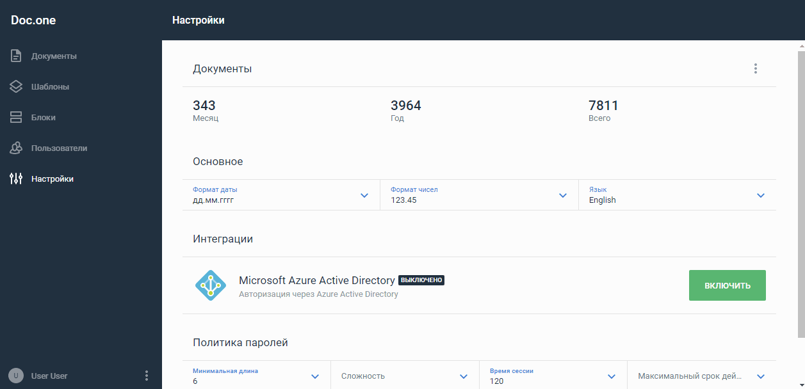

Найти документ по названию¶
Откройте раздел Документы.
Начните вводить наименование нужного документа в строку Поиск вверху страницы.
В списке останутся только те документы и пакеты документов, наименование которых содержат введенное значение. Документ отобразится в результатах поиска, даже если он содержится в одной из папок раздела.

Для отмены фильтрации нажмите кнопку Очистить в правом верхнем углу.